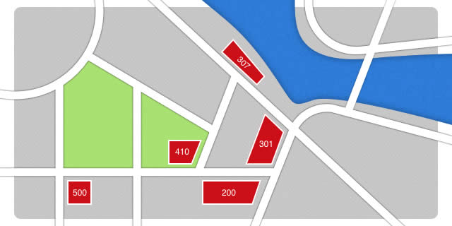

HTTP: Response Codes
In the last article, we concluded by saying that HTTP manages the interactions between a client and a server, and explained the notion of HTTP headers. There will be a lot more to say about these later on in this article series: they influence interactions and performance. In the meantime, let's look at an equally important and related aspect of these interactions: HTTP Response codes.
A stroll through the streets
One morning, I took a walk to go to a coffee shop and read a book. To my surprise, when I arrived there, the shop was closed. A message on the door said that during this week a festival was being held, so the coffee would be served temporary in their food truck — "The 307" — near the river. I went there and enjoyed the coffee.
Next I decided "This is a good day for browsing in a bookshop — I'll head to my favourite bookshop in town." When I got there, I found that the shop was unfortunately closed, but all was not lost: there was a message on the door saying that the bookshop needed more space and they had permanently moved to a new building at "301, Berners-Lee Street". "Cool," I said to myself, "that's not very far away — I'll go and visit them." When I arrived there, the employees recognised me, greeting me in 200 ways. OK, I'm exaggerating, but you get the idea!
On my way back home, at number "410 Berners-Lee Street", there was a shop with dust gathering on the window. A notice from the owner said that they applied for bankruptcy and had to close, for ever gone. I was then even more surprised when I arrived at the end of the street, number "500, Berners-Lee": a full 4 storey building had completely collapsed. I'm not sure what happened there!
Anyway, it was very good day overall, and I thought I'd round it off by writing about HTTP codes sent by the server in response to the client making requests.
HTTP Response Syntax and Status Line
In the last article, we touched upon the first line of the response syntax sent by clients (including the methods). This time we will focus mainly on the first line of the response message coming from the server, and what the different codes that can appear in that line mean. Note that these two types of message — request and response — are very similar. As stated in the HTTP/1.1 revision (still at work but almost finished):
An HTTP message can either be a request from client to server or a response from server to client. Syntactically, the two types of message differ only in the start-line, which is either a request-line (for requests) or a status-line (for responses), and in the algorithm for determining the length of the message body (Section 3.3).
The first line in the response is called the status-line. The line starts with the HTTP protocol version, a space, a 3-digit integer code, a space and finally an explanation sentence. Here is an example:
HTTP/1.1 200 OKNote that the short explanation sentence is completely optional and should be ignored by clients; a script should not rely on it for processing purposes. Let's go through some of the most common status codes and look at their intended meaning.
Server and HTTP Response Codes
200, ok — everything is fine!
Each time someone wants to visit Opera's home page, a client requests a http://www.opera.com/ by sending this kind of message:
GET / HTTP/1.1
Host: www.opera.com
Accept-Language: fr
User-Agent: BrowseAndDream/1.0The server will analyse the message from the client and give an answer according to what it has understood from the URI and the headers. As said in previous articles, it's all about managing an interaction to the best ability of the two parties: the client and the server.
If understood, the server will respond to the request with a message starting with 200 OK — everything is fine, the request has been successful. This message will contain a few HTTP Response headers and the page's content, which might vary depending on the client HTTP request headers; there is no absolute answer. As with any negotiation, this is a dialog to find the best compromise for both parties. Here is an example response to our above request:
HTTP/1.1 200 OK
Date: Fri, 24 Aug 2012, 13:56:44 GMT307, moved temporarily elsewhere
The server could respond to the client with a message stating that the content has been temporary moved to a new location. This is useful when you want to redirect a client to a specific page for a little while. For example, imagine a Web address giving the weather forecast for Taipei, and there has lately a very strong typhoon. It would be a good idea to inform users specifically about the typhoon, until it has passed. The request might look like this:
GET /taiwan/weather/today HTTP/1.1
Host: meteo.example.orgThe server might want to reply to the client saying "here is a page elsewhere that will give you very specific information about the current crisis in Taipei.". The response would look something like this:
HTTP/1.1 307 Temporary Redirect
Date: Fri, 24 Aug 2012, 13:56:44 GMT
Location: http://meteo.example.org/taiwan/weather/crisisUsually browser clients automatically follow the redirection to the new address mentioned in the Location line. The redirection could be to another domain on the Web. Once the crisis is finished, the redirection will be removed from the server. A client is not supposed to remember that redirection as something definitive. That's important in the case of bookmarks or history. It would be perfectly possible to program a client to manage these redirections in a meaningful way.
Even though such redirects are not seen by the user in most browsers, it would be possible to create a body (the payload of the HTTP message) with a short message giving a link to the new location, to allow the user to click through to it.
301, address changed permanently
When managing information on a Web site, sometimes we really need to inform the client (and its users) that a web page has changed address permanently. In a company, sometimes business units are reorganised, through mergers or a change of priorities. Let's say that in a technology company the electromechanical unit has been absorbed completely by the electronics division. A client requesting
GET /section/electromech/about HTTP/1.1
Host: inc.example.comcould be redirected to the following:
HTTP/1.1 301 Moved Permanently
Date: Fri, 24 Aug 2012, 13:56:44 GMT
Location: http://inc.example.com/section/electronic/aboutThe difference between this status, and the previous 307 code we looked at, is that this change is permanent and the server is sending a clear message to the client that if it has bookmarks that have the old URI in memory, it might be time to adjust to the new URI. This could be handled automatically or via a user confirmation.
There are also two direct benefits of redirecting old URIs to the new ones. You create trust for your users by maintaining the information and showing that you care about the information you are managing. The second benefit comes with the stability of the resources. Web sites with a reputation for maintaining their links will be more likely to have other sites linking to them on a long term basis, hence improving its search engine karma.
410, this is the end — my only friend, the end
Sometimes a Web site needs to say to the client that the information that existed at this precise URI is gone forever. There might be good reasons to do that. We all know that cool URIs don't break; 410 Gone is the appropriate way of "breaking them". More exactly it is a way to tell users that the content previously available at this URI has been intentionally deleted. The server is informing clients accessing the resource that they should not remember the URI. In a system that has bookmarks or a history log, it is a way to tell the client (and its user) that this can be safely erased. Imagine the case of a social network, and requesting a specific user's page:
GET /people/jeanpaulsartres HTTP/1.1
Host: socialnetwork.example.comThe person no longer wants to be part of your social network and has decided to close their account. On the server side, you might want to warn other users accessing the URI because they might have it in their bookmarks or history:
HTTP/1.1 410 Gone500, I have a bad feeling about this
Sometimes the server is unable to answer the request without knowing why. HTTP doesn't deal at all with the way the web sites are working, for example how the data are stored in a database, or how the server-side code retrieves and manipulates that data. The server might have delivered the request to some internal software but not got an appropriate answer. So the server notifies the client and its user that there is something wrong happening that it is not sure about with a response like this:
HTTP/1.1 500 Internal Server ErrorImplementing response status lines in web servers
When designing a system to manage content, separating the layers out into resources and their URIs is essential. It helps when answering client requests with the right information. Serving content to software or a person is something crafted in the fabric of time. The information evolves, changes. Caring about that in advance makes the system more flexible. Giving all code strategies for implementing server responses is not the purpose of this article, but the following examples should at least give you a starting point, although be warned that they probably won't scale very well to large operations involving thousands of URIs.
Redirecting with Apache
If we want to redirect http://inc.example.com/section/electromech/about to http://inc.example.com/section/electronic/about, one way of doing it is to put an .htaccess file at the root of our site with the following instructions:
RewriteEngine On
RewriteBase /
RewriteRule ^/section/electromech/about /section/electronic/about [L,R=301]Note: There are other ways to handle this as well: through httpd.conf, through databases, through scripting, etc. It depends on the way your system is built.
Redirecting with nginx
nginx is another frequently used server, more specifically for CDNs. The above example rewritten for nginx would look like so:
server {
listen 80;
server_name inc.example.com;
rewrite ^/section/electromech/about http://inc.example.com/section/electronic/about permanent;
}HTTP codes, we are family
Above we have looked at just a few of the available HTTP codes; there are many others. Some are very well-known, such as 404 Not Found, but others are quite obscure and don't crop up very often. Whatever the case, the first digit is always an indication of the family of codes they belong to:
- 1xx (Informational): Request received, continuing process.
- 2xx (Successful): The action was successfully received, understood, and accepted.
- 3xx (Redirection): Further action needs to be taken in order to complete the request.
- 4xx (Client Error): The request contains bad syntax or cannot be fulfilled.
- 5xx (Server Error): The server failed to fulfil an apparently valid request.
Summary
And that brings us to the end of our study of HTTP status codes. I encourage you to explore each HTTP code, and familiarise yourself with their purposes. Some have particular consequences for caching and the resource payload of the HTTP message; we will look at caching next time around.
What you need to remember
- Servers send HTTP status codes to provide quick information on the response sent by the client.
- HTTP status codes have consequences on caching, and handling of URIs on the client side.
- There are different families of HTTP status codes.
karlcow

Karl is working from Montréal, Canada. It has been participating to the Web since its inception under different roles including Web designer, CTO, W3C staff, translations volunteer, bits pusher, http poet, …
This article is licensed under a Creative Commons Attribution 3.0 Unported license.
Comments
-
A cool article, thanks Karl! Very useful and presented in such an interesting way :)
-
How this article - which starts with a story about coffee - manages not to mention 418 is beyond me.
-

@lucideer - it has nothing to do with coffee ;-)
-
Hi Karl,
-

good article....
-

@lucideer that is probably because Opera doesn't support 418 status :( I expected at least some funny image.
-

What about 304?
-
This is really handy - thanks so much
-

Excellent article very usefull information and thank you for responding to posts, answered some of my questions before I even posted them.
-

Hi Karl - I like your HTTP articles. They are very easy and clear to understand.
-

BTW, you said you will write an article about caching: "we will look at caching next time around". Is it already published?
No new comments accepted.Томица Кораћ
Thursday, September 13, 2012
lucideer
Thursday, September 13, 2012
Chris Mills
Thursday, September 13, 2012
alharawi
Friday, September 14, 2012
I think redirect using
Rewriteis not a good solution for "statics" redirect on Apache server. It easer to use either-
Redirect 000 /old-page http://mydomain.tld/new-page-
RedirectMatch permanent ^/old-page$ /new-pageBoth are using less resources than rewrite rules. This will not work for redirects with query string; rewrite rules are the best solution in that specific case.
nidheeshr
Friday, September 14, 2012
Martin Kadlec
Friday, September 14, 2012
Jim
Saturday, September 15, 2012
I know the guy who does the jquery stuff was mad for a while because Opera did not support that response code for XMLHttpRequest
Vlado Bey
Friday, September 21, 2012
Jody Blackstone
Monday, October 15, 2012
thetaclear
Sunday, December 9, 2012
I have a question, though. What does "and in the algorithm for determining the length of the message body" mean? Can you give an example.
thetaclear
Sunday, December 9, 2012